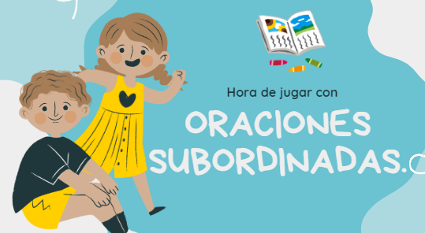

Saltar la navegación
Aplicación web - Oraciones subordinadas y coordinadas.
¡BIENVENIDOS QUERIDOS ESTUDIANTES!
Presentación de unidad.
1. Tipos y ejemplos de oraciones subordinadas
1.1 Actividades de oraciones subordinadas.
Actividad 1 subordinada. Encuentra y completa las oraciones.
Actividad 2 subordinada. Arrastra la respuesta correcta.
Actividad 3 subordinada. Video Interactivo
2. Tipos y ejemplos de oraciones coordinadas
2.1 Actividades oraciones coordinadas.
Actividad 1 coordinada. Video interactivo.
Actividad 2 coordinada. Completa con la respuesta correcta.
Actividad 3 coordinada. Sopa de letras
Actividad 4 coordinada. Rellenar huecos.
«
Anterior
|
Siguiente
»
Actividad 3 subordinada. Video Interactivo
Vídeo interactivo
mp4

Licencia:
licencia propietaria
«
Anterior
|
Siguiente
»
Creado con eXeLearning
(Ventana nueva)